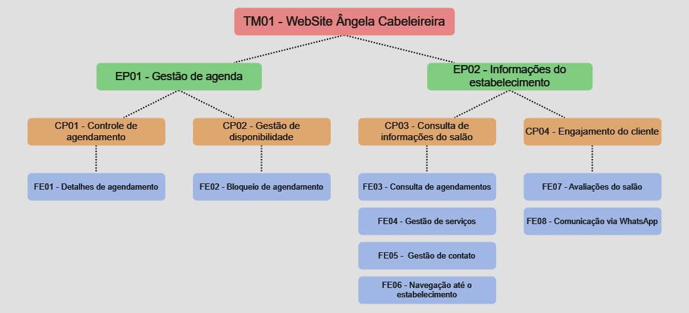

Backlog do Produto
Requisitos Funcionais
Estrutura de Backlog do produto - Scaled Agile Framework (SAFe):

| Personas | |
|---|---|
| Cliente | Pessoa que utiliza os serviços do salão de beleza. Interessado em agendar serviços, visualizar informações sobre serviços oferecidos, avaliar o salão, receber comunicações sobre agendamentos, entre outras necessidades relacionadas à experiência como cliente. |
| Gerente | Pessoa responsável pela administração e operação do salão de beleza. Suas preocupações incluem a gestão da agenda, a adição e remoção de serviços, acompanhamento de avaliações dos clientes, entre outras tarefas relacionadas à administração do salão. |
| Usuário | É tanto o cliente, quanto o gerente do salão. Tem acesso às funcionalidades destinadas a ambas as personas. |
| TM01 - Website Ângela Cabeleireira | |||
|---|---|---|---|
| ÉPICOS | CAPACIDADES | FEATURES | USER STORIES |
| EP01 | CP01 - Controle de agendamento | FE01 - Detalhes de agendamento | US01 - Como usuário, quero agendar um horário no salão, para receber um serviço. |
| US02 - Como usuário, quero retirar um agendamento, para liberar espaço na agenda do salão. | |||
| US03 - Como usuário, quero verificar meus agendamentos, para acompanhar os dias e horários marcados no salão. | |||
| CP02 - Gestão de disponibilidade | FE02 - Bloqueio de agendamento | US04 - Como gerente, quero bloquear determinados dias e horários da agenda, para impossibilitar o agendamento referente. | |
| US05 - Como gerente, quero limitar períodos de agendamento, para ter controle do número de clientes agendados. | |||
| EP02 | CP03 - Consulta de informações do salão | FE03 - Consulta de agendamentos | US06 - Como cliente, quero visualizar os horários disponíveis para agendamento em um dia específico, para escolher o melhor horário para o serviço. |
| US07 - Como gerente, quero visualizar todos os agendamentos realizados, para ter um controle de serviços. | |||
| FE04 - Gestão de serviços | US08 - Como gerente, quero registrar serviços na plataforma, para que os clientes sabiam o que está disponível. | ||
| US09 - Como gerente, quero editar serviços existentes, para atualizar detalhes. | |||
| US10 - Como gerente, quero retirar serviços existentes, para que deixe de ser uma opção disponível. | |||
| FE05 - Gestão de contato | US11 - Como gerente, quero registrar informações de contato do salão, para disponibilizar novas maneiras de entrar em contato com o salão. | ||
| US12 - Como gerente, quero remover informações de contato do salão, para remover dados incorretos. | |||
| FE06 - Navegação até o estabelecimento | US13 - Como cliente, quero visualizar uma rota da minha localização até o estabelecimento, para saber o caminho até o salão. | ||
| US14 - Como cliente, quero visualizar pontos de referência próximos ao estabelecimento, para facilitar a viagem até o salão. | |||
| CP04 - Engajamento do cliente | FE07 - Avaliações do salão | US15 - Como cliente, quero atribuir uma classificação por estrelas ao serviço do salão, para refletir minha satisfação geral. | |
| US16 - Como cliente, quero escrever um comentário sobre minha experiência no salão, para compartilhar detalhes específicos do serviço. | |||
| US17 - Como cliente, quero ter a opção de manter minha avaliação anônima, para que minha opinião seja confidencial. | |||
| FE08 - Comunicação via WhatsApp | US18 - Como cliente, quero receber lembretes de agendamentos via WhatsApp, para não esquecer dos serviços agendados. | ||
| US19 - Como cliente, quero receber detalhes dos serviços agendados via WhatsApp, para saber exatamente o que foi marcado. | |||
| US20 - Como cliente, quero receber a opção de confirmar meus agendamentos via WhatsApp, para garantir que minhas reservas estejam confirmadas. | |||
Requisitos Não Funcionais
Os requisitos não funcionais foram identificados de acordo com o modelo URPS+.
| Número | Tipo | Declaração |
|---|---|---|
| RNF01 | Suportabilidade | Deve ser compatível com os principais navegadores Web em suas versões a partir de 2023: Chrome 109, Edge 109, Opera 94, Safari 16.3, FireFox 108 |
| RNF02 | Usabilidade | O produto deverá seguir a identidade visual do salão (paleta de cores, logomarca, banners). |
| RNF03 | Usabilidade | O site deve ser responsivo a tamanhos de tela de dispositivos desktop e mobile |
| RNF04 | Usabilidade | Deve ser acessível para usuários com dificuldades visuais, seguindo as diretrizes de acessibilidade da web (WCAG) |
| RNF05 | Usabilidade | Seguir o plano de navegação de telas estabelecido |
| RNF06 | Usabilidade | O site deve conter as informações de contato, localização, postagens do Instagram e avaliações |
Critérios de priorização
Utilizaremos os seguintes critérios de priorização:
Valor de Negócio
(Business Value) Significa quanto é a contribuição para o produto final, inclui impacto financeiro, satisfação de cliente e benefícios para o negócio. Varia de 1 a 4, da seguinte forma:
- A US fornece um valor mínimo de negócio, ou seja, a funcionalidade resolve apenas uma pequena fração do problema.
- A US fornece um valor razoável de negócio, ou seja, a funcionalidade propõe resolver uma parte do problema.
- A US fornece um alto valor de negócio, ou seja, a funcionalidade resolve boa parte do problema.
- A US fornece um valor considerável de negócio, ou seja, a funcionalidade é indispensável para a solução do problema.
Dificuldade
(Difficulty) Significa a dificuldade técnica e operacional de desenvolver uma funcionalidade. Varia de 1 a 3, da seguinte forma:
- A US apresenta um alto grau de dificuldade técnica, ou seja, requer um maior esforço para desenvolver a funcionalidade e uma maior competência
- A US apresenta um médio grau de dificuldade técnica, ou seja, a funcionalidade não é tão difícil de ser implementada, porém requer certa atenção
- A US apresenta um baixo grau de dificuldade técnica, ou seja, não é necessário tanto esforço para desenvolver a funcionalidade, com uma competência baixa, ou mediana é possível fazer
A pontuação final dos critérios de priorização, será uma simples soma de cada resultado por épico:
vn + d = p
| Valor de Negócio | Dificuldade | Pontuação | ||
| EP01 | Gestão de agenda | 4 | 1 | 5 |
| EP02 | Informações do estabelecimento | 2 | 3 | 5 |
O mesmo método será aplicado para cada US:
vn + d = p
| Valor de Negócio | Dificuldade | Pontuação | ||
| US01 | Agendar um horário | 4 | 1 | 5 |
| US02 | Retirar Agendamento | 4 | 1 | 5 |
| US03 | Verificar agendamento realizado | 3 | 2 | 5 |
| US04 | Bloquear agendamento | 4 | 1 | 5 |
| US07 | Visualizar todos os agendamentos | 3 | 2 | 5 |
| US19 | Detalhes de agendamento via WhatsApp | 2 | 3 | 5 |
| US20 | Confirmação de agendamento via WhatsApp | 2 | 3 | 5 |
| US05 | Limitar período de agendamento | 3 | 1 | 4 |
| US06 | Visualizar horários disponíveis | 2 | 2 | 4 |
| US08 | Registrar serviços | 1 | 3 | 4 |
| US09 | Editar serviços | 1 | 3 | 4 |
| US10 | Retirar serviços | 1 | 3 | 4 |
| US11 | Registrar informações de contato | 1 | 3 | 4 |
| US12 | Remover informações de contato | 1 | 3 | 4 |
| US18 | Lembrente de agendamento via WhatsApp | 1 | 3 | 4 |
| US13 | Visualizar rota até o estabelecimento | 1 | 2 | 3 |
| US14 | Visualizar pontos de referência | 1 | 2 | 3 |
| US15 | Atribuir classificação por estrelas | 1 | 2 | 3 |
| US16 | Escrever um comentário | 1 | 2 | 3 |
| US17 | Manter avaliação anônima | 1 | 2 | 3 |
Minimum Viable Products (MVP's)
MVP1
| Valor de Negócio | Dificuldade | Pontuação | ||
| US01 | Agendar um horário | 4 | 1 | 5 |
| US02 | Retirar agendamento | 4 | 1 | 5 |
| US03 | Verificar agendamento realizado | 3 | 2 | 5 |
| US04 | Bloquear agendamento | 4 | 1 | 5 |
| US05 | Limitar período de agendamento | 3 | 1 | 4 |
| US06 | Visualizar horários disponíveis | 2 | 2 | 4 |
| US07 | Visualizar todos os agendamentos | 3 | 2 | 5 |
| US19 | Detalhes de agendamento via WhatsApp | 2 | 3 | 5 |
| US20 | Confirmação de agendamento via WhatsApp | 2 | 3 | 5 |
Critérios de Aceitação do MVP1
MVP2
| Valor de Negócio | Dificuldade | Pontuação | ||
| US08 | Registrar serviços | 1 | 3 | 4 |
| US09 | Editar serviços | 1 | 3 | 4 |
| US10 | Retirar serviços | 1 | 3 | 4 |
| US11 | Registrar informações de contato | 1 | 3 | 4 |
| US12 | Remover informações de contato | 1 | 3 | 4 |
| US18 | Lembrente de agendamento via WhatsApp | 1 | 3 | 4 |
| US13 | Visualizar rota até o estabelecimento | 1 | 2 | 3 |
| US14 | Visualizar pontos de referência | 1 | 2 | 3 |
| US15 | Atribuir classificação por estrelas | 1 | 2 | 3 |
| US16 | Escrever um comentário | 1 | 2 | 3 |
| US17 | Manter avaliação anônima | 1 | 2 | 3 |
Critérios de Aceitação do MVP2
Alinhamento com os Objetivos do Projeto
Os objetivos indentificados do projeto são: Objetivo Principal:
Objetivos Específicos:
Objetivos Secundários:
Na tabela a seguir é apresentado quais USs de cada MVP estão alinhadas com os objetivos do projeto
| Objetivo | Nome | US's |
|---|---|---|
| OE01 | Gerência dos agendamentos via web | US01, US02, US03, US04, US05, US06, US07 |
| OE02 | Gerência das informações do salão | US08, US09, US10, US11, US12 |
| OE03 | Consulta das informações | US13, US14 |
| OS01 | Aumentar satisfação dos clientes | US01, US02, US03, US04, US05, US19, US20 |
| OS02 | Aumentar base de clientes | US13, US14, US15, US16, US17 |
| OS03 | Aumentar taxa do retorno | US15, US16, US17 |
| OS04 | Realizar avaliações, contato e calcular rota | US11, US12, US13, US14, US16, US17 |
Histórico de Revisão
| Data | Versão | Descrição | Autor |
|---|---|---|---|
| 16/10/2023 | 1.0 | Declaração dos Requisitos Funcionais (de acordo com o framework SAFe) e dos RNF's | Todos |
| 22/10/2023 | 1.1 | Correção e Atualização do backlog de acordo com o SAFe | Guilherme, Vinícius e Yves |
| 24/10/2023 | 1.2 | Correção do backlog de acordo feedbacks do professor | Todos |
| 25/10/2023 | 1.3 | Atualização com os Critérios de Priorização, MVP's e Alinhamento | Todos |
| 26/10/2023 | 1.4 | Correção da estrutura da tabela de declaração do Backlog e das categorias dos RNFs | Vinícius |
| 05/11/2023 | 1.5 | Reestruturação do Backlog, Adição dos objetivos Específicos e Alteração nos MVPs | Guilherme de Sá |
| 06/11/2023 | 1.6 | Adicionados Critérios de Aceitação do MVP1 em versão preliminar | Vinícius |
| 11/11/2023 | 1.7 | Ajuste em histórias de usuários e na estrutura de backlog | Yves |
| 12/11/2023 | 1.8 | Definição dos critérios de aceitação e dos testes de aceitação do MVP1 | Yves |
| 13/12/2023 | 1.9 | Centralizando imagem | Guilherme de Sá |